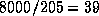
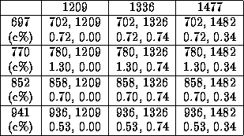

Table 2 shows the error percentage in detecting DTMF tones for the Goertzel algorithm on the ADSP-2101. Unfortunately, its resolution was not high enough. For example, for with KHz sampling rate, resolution in frequency domain is

Hz. This resolution causes an error in meeting standard 2(b). The DTMF receiver must eliminate the tones outside the specified ranges. To be more specific, consider a Hz tone. Standard 2(b) enforces the elimination of frequencies outside Hz for Hz. However, Hz resolution enforces the detection of signals in Hz to yield Hz, which is impossible with 39 Hz resolution in frequency domain. Table 2: Goertzel algorithm tests on the ADSP-2101
